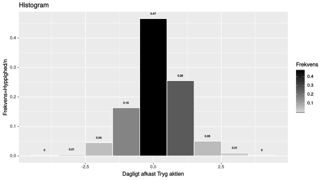

Kapitel 3 Deskriptiv statistik
Deskriptiv eller beskrivende statistik er metoder til vha. figurer, tabeller og deskriptorer (middelværdi, median etc.) at præsentere et datamateriale. Beskrivende statistik er simplere metoder end inferentiel eller matematisk teoretisk statistik, hvor konklusioner drages på baggrund af en egentlig statistisk analyse.
Vi har nedenfor et multivariat datasæt bestående af daglige procentvise afkast for 6 OMX20 aktier: TRYG, DDB, FLS, GENMAB, TDC, ISS
Herunder kan man i tabellen se det procentvise daglige afkast for de 6 OMX20 aktier:
3.0.1 Tryg aktien
Data for DK aktiekurser hentes her, vi ønsker at beskrive det procentvise daglige afkast for Tryg vha. forskellige deskriptorer.
I figuren herunder kan vi se hvordan selve kursen på Trygaktien udvikler sig over året, altså ikke afkastet i procent:
Vi kan grafisk illustrere Tryg data i et histogram, nedenfor er et histogram, på x-aksen er afkastet i procent, på y-aksen er hyppighederne dvs. antallet af observationer i hver søjle:
Her er samme data med færre søjler, nu har vi på y-aksen frekvensen af søjlerne i stedet for hyppigheden. Frekvensen er antallet af observationer i hver søjle divideret med det totale antal observationer.

3.0.2 Middelværdien
Middelværdien af en variabel bestemmes ved at bestemme gennemsnittet for variablen. Da afkastet for Tryg indeholder n=380 observationer bliver formlen:
\[ \bar{x}=\frac{\sum_1^n (x_i)}{n}=\frac{0.0641+1.089+-1.5209...+0.1833}{380}=0.112\]
3.0.3 Variansen
Variansen (stikprøvevariansen) er et udtryk for variationen omkring middelværdien i data:
\[ S^2=\frac{\sum_1^n (x_i-\bar{x})^2}{n-1}=\\ \frac{(0.0641-0.112)^2+(1.089-0.112)^2+(-1.5209-0.112)^2...+(0.1833-0.112)^2}{379}=\\\\ \\ \\0.9259\]
“Every two days now we create as much information as we did from the dawn of civilization up until 2003”
- Eric Schmidt Google
3.0.4 Standardafvigelsen
Standardafvigelsen er lig med kvadratroden af variansen, og er dermed ligeledes et mål for variationen omkring middelværdien. Standardafvigelsen har i modsætning til variansen samme enhed som data, hvilket gør tolkning lettere. Varians og standardafvigelse er afhængige af skala, hvilket fx. betyder, at værdier i kr. vil have 1000 gange større variation end størrelser målt i antal tusinde kr. For fx. aktie afkast vil standardafvigelsen være en vigtig parameter, da investorer er risikoaverse ønskes mindst mulig standardafvigelse i forhold til afkastet.
\[ S=\sqrt{S^2}=\sqrt{0.9259}=0.9622\]
3.0.5 Modus
Gennemsnit
 En finansøkonom, en biolog og en statistiker er på elgjagt. De ser er flot stor elg. Finansøkonomen skyder og rammer en cm. foran snuden. Biologen skyder og rammer 1 cm. bag halen. Statistikeren jubler og råber: “Vi fik den!!! Vi fik den !!!”
En finansøkonom, en biolog og en statistiker er på elgjagt. De ser er flot stor elg. Finansøkonomen skyder og rammer en cm. foran snuden. Biologen skyder og rammer 1 cm. bag halen. Statistikeren jubler og råber: “Vi fik den!!! Vi fik den !!!”
Modus/modalværdi/typetallet er den hyppigst forekommende observation for et observations sæt. Typetallet er ikke nødvendigvis godt til at beskrive data. Har vi fx. observations sættet: {1,1,2,3,4,5,6,7,8,9,10} er typetallet 1, medianen 5 og middelværdien 5.09. I dette tilfælde ville modus være en ringe deskriptor for observations sættet.
Har vi en fordeling med en top kalder vi den for unimodal, har fordelingen 2 toppe kalder vi den bimodal.
3.1 Medianen, kvartiler og fraktilen
Når vi ønsker at beskrive middeltendensen i et datasæt kan vi angive middelværdien, typetallet eller medianen.
Medianen også kaldet 2. kvartil eller 50% fraktilen er den midterste observation i det ordnede datasæt, er der et lige antal observationer tages gennemsnittet. Man kan nu bestemme nedre kvartil også kaldet 1. kvartil eller 25% fraktilen, som midten af den nedre halvdel af det ordnede datasæt. Tilsvarende gælder for øvre kvartil også kaldet 3. kvartil eller 75% fraktilen blot for den øvre halvdel at det ordnede datasæt.
Hvis vi har et ordnet datasæt {11,13,15,16,16,18,20}, finder vi således medianen som den midterste observation, da vi har et ulige antal observationer. {11,13,15,16,16,18,20}. Vi kan udtrykke dette som at 50% af observationerne er 16 eller derover, eller ævkvivalent, at 50% af observationerne er mindre end 16.
Vi kan bestemme 1. kvartil, som den midterste observation, i den nedre del at datasættet {11,13,15,16}. Vi har to midterste observationer {11,13,15,16}, i den nedre del af datasættet og bestemmer 0.25 fraktilen som gennemsnittet af disse: \(\frac{13+15}{2}=14\). Vi kan udtrykke dette som at 75% af observationerne er 14 eller derover, eller at 25% af observationerne er mindre en 14.
“Most murders are committed by someone who is known to the victim. In fact, you are most likely to be murdered by a member of your own family on Christmas day.”
- Mark Haddon
Der er mere end 8 forskellige definitioner på kvartiler og fraktiler alt efter kontinent og region, vi går ikke i deltaljer med beregnings metoderne, men softwareprogrammer kan beregne fraktiler for os, disse kan altså afvige en smule alt efter beregningsmetoden. 1. og 2. kvartil er fx. ikke helt de samme når vi regner disse ud i excel.
Data for DK aktiekurser hentes her , vi ønsker at beskrive det procentvise daglige afkast for Tryg vha. forskellige deskriptorer.
Medianen for Tryg findes ved at sortere data -3.7187, -3.1777, -2.8029,…,3.7413 vi finder at medianen bliver 0.12895.
Vi bestemmer ligeledes 1. kvartil til -0.4262, og 2. kvartil til 0.69385. 1. kvartil, Medianen og 3. kvartil kan ses i nedenstående boxplot diagram, som hhv. første, anden og tredie vandrette streg i boxplottet for Tryg. Vi kan hvis vi skal forsøge at udtrykke fx. 1. kvartil med menneskeord sige at 25% af dagene var der et afkast på -0.4262 eller derunder. Man kunne også udtrykke det som at 75% af dagene var afkastet på mere end-0.4262.
Kvartilafstanden eller IQR interquantile range betyder 3. kvartil minus 1. kvartil, i Tryg eksemplet bliver kvartilafstanden 0.69385- -0.4262= 1.12005. Dette svarer præcis til højden på boksen i boxplottet for Tryg, vi kan altså konstatere at halvdelen af afkastene lå i et spænd på 1.12005 procent.
3.1.1 Fraktiler
Vi kan ligeledes bestemme alle mulige andre fraktiler end 25% 50% og 75% fraktilerne, software angiver ofte en række af disse så man hurtigt kan danne sig et billede af datasættet. Nedenfor er en del fraktiler for Tryg datasættet angivet, mange af disse kan direkte aflæses i boxplottet.
10% fraktilen, 20% fraktilen,…,90% fraktilen kaldes også for deciler.
Herunder ses fraktiler for dagligt afkast på Tryg aktien.
3.2 Skævhed
Skævheden angiver hvor meget en fordeling afviger fra en symmetrisk fordeling. Hvis skævheden er positiv (højreskæv), vil fordelingen have koncentrerede værdier til venstre og mere spredte værdier til højre, en hale mod højre. Er fordelingen venstreskæv vil skævheden være negativ, og fordelingen har hale mod venstre. Hvis skævheden er 0 eller tæt på nul siger vi fordelingen er symmetrisk.
Formlen for skævhed er lidt indviklet, men softwarepakker kan beregne denne, der findes et par forskellige beregnings metoder så man kan godt få forskellige resultater. I Excel bruges formlen =SKEW() eller på dansk =SKÆVHED(). Skævheden for Tryg variablen kan beregnes til -0.12, det betyder fordelingen er en lille smule venstreskæv, det er svært at se men der er et par negative afkast som gør at middelværdien er mindre end medianen. Vi siger at medianen er mere stabil overfor outliers (ekstreme observationer) hvorimod middelværdien påvirkes af outliers. Bemærk man får måske et resultat, der afviger en smule fra det her beregnede, dette skyldes de forskellige metoder til beregning.
| Navn | Skævhed | Typisk form | Indikator |
|---|---|---|---|
| Højreskæv | Større end 0 | Hale mod højre | Middelværdi større end Median |
| Venstreskæv | Mindre end 0 | Hale mod venstre | Median større end Middelværdi |
| Symmetrisk | 0 eller tæt på 0 | Samme haler mod højre og venstre | Median tæt på middelværdi |
3.3 Kurtosis
Kurtosis eller topstejlhed beskriver hvor spids eller flad en fordeling er. Hvis kurtosis er positiv, er der meget vægt helt inde ved midten og ud i halerne det giver en spids, slank bredfodet fordeling, der kaldes leptokurtisk. Hvis kurtosis er negativ er der meget vægt mellem middelværdien og halerne, er kurven platykurtisk. Et typisk leptokurtisk datasæt vil i et histogram typisk have få høje søjler i midten og en eller to lange flade haler. Et platykurtisk datasæt vil typisk have mange næsten lige høje søjler, og kun enkelte lave søjler i siderne. Er kurtosis tæt på nul, siger vi fordelingen er mesokurtisk eller klokkeformet, normalfordelinger er mesokurtiske.
Der findes forskellige lidt indviklede beregningsformler for kurtosis, men softwarepakker rapporterer den. I Excel bruges formlen =KURT() eller på dansk =TOPSTEJL(). Kurtosis for Tryg variablen er positiv, det betyder fordelingen er spids eller leptokurtisk, hvilket man måske kan fornemme, bemærk man får ikke nødvendigvis præcis samme værdi når man beregner kurtosis, ligesom med fraktiler findes der mange forskellige måder at beregne kurtosis på. Det er ikke vigtigt hvilken metode der benyttes, tolkningen er vigtigere.
| Fordeling | Kurtosis | Typisk form |
|---|---|---|
| Leptokurtisk | Større end 0 | Spids |
| Mesokurtisk | 0 eller tæt på 0 | Klokkeformet |
| Platykurtisk | Mindre end nul | Flad |
3.4 Spørgsmål deskriptiv statistik
Spørgsmål deskriptiv statistik
1. Hvad bliver medianen for datasættet {2,5,2,5,3,4}?
2. Hvad bliver 25% fraktilen for datasættet {2,5,2,5,3,4}?
3. Hvad bliver 1. kvartil for datasættet {2,5,2,5,3,4}?
4. Hvad bliver 2. kvartil for datasættet {2,5,2,5,3,4}?
5. Hvad bliver 0.75 fraktilen for datasættet {2,5,2,5,3,4}?
6. Du er nystartet porteføljeforvalter i private banking afdelingen i en større bank, du forestår forvaltningen af 10 kunders formuer. I antal tusinde kroner udgør porteføljerne: {344,421,293,459,228,391,375,377,318,428}. Du er fredag aften på Victor i dit Tiger suit. Under cocktails i baren falder du i snak med en ældre svensk mand, Ingvar Kamprad. Han er meget imponeret over dine prognoser og investeringsforslag. Mandag morgen kontakter en af hans medarbejdere dig, Ingvar Kamprad ønsker du skal forvalte en formue på 2 mia. kr. altså 2.000.000 tusinde kr. for ham.
Hvorledes vil du bedst beskrive din typiske klient ved medianen eller middelværdien?
Svar deskriptiv statistik
1. Det ordnede datasæt bliver: {2,2,3,4,5,5}. Der er 2 midterste observationer 3 og 4, {2,2,3,4,5,5}, gennemsnittet af disse er 3.5
Medianen bliver altså 3.5
2. Det ordnede datasæt bliver: {2,2,3,4,5,5}. 25% fraktilen bliver {2,2,3,4,5,5}
3. Det ordnede datasæt bliver: {2,2,3,4,5,5}. 1. kvartil bliver {2,2,3,4,5,5}
4. Det ordnede datasæt bliver: {2,2,3,4,5,5}. 2. kvartil bliver {2,2,3,4,5,5} \(\frac{3+4}{2}=3.5\)
5. Det ordnede datasæt bliver: {2,2,3,4,5,5}. 0.75 fraktilen bliver {2,2,3,4,5,5}
6. Middelværdi og median for den gamle portefølje er henholdsvis 363 400 og 376 000.
Middelværdi og median for den ny portefølje er henholdsvis 182 148 545 og 377 000.
Den gennemsnitlige porteføljeværdi, er steget voldsomt efter den nye superklient, men den typiske klient beskrives her bedst ved medianen. Dette skyldes medianen ikke påvirkes væsentligt af denne nye store kunde, vi kan kalde denne observation for en outlier. Medianen er altså mere stabil overfor outliers i forhold til middelværdien.
Spørgsmål Forbes 400 rigeste i USA formue
I linket her er filen Forbes 400 2014 RICH US, filen indeholder data vedr. de 400 rigeste amerikanere i 2014. Formuen worth er opgjort i antal milliarder USD, de følgende spørgsmål relaterer sig udelukkende til denne variabel.
1. Hvilken type variabel er variablen worth?
2. Hvad er den gennemsnitlige formue for de 400 rigeste?
3. Hvad er medianen for de 400 rigeste?
4. Hvad er fordelingens skævhed?
5. Hvad er 3. kvartil?
6. Hvad er Kvartilafstanden?
7. 10% af de rigeste velhavere har en formue der er større end?
8. 2.5% af de rigeste velhavere har en formue der er større end?
9. 90% af de fattigste velhavere har en formue der er mindre end?
10 Er fordelingen flad, klokkeformet eller spids?
11 Er fordelingen platykurtisk, mesokurtisk eller leptokurtisk?
12 Hvad er variationsbredden?
Svar Forbes 400 rigeste i USA formue
1. Variablen worth er en kvanitativ, kontinuert variabel, ratioskala.
2. Den gennemsnitlige formue er 3.81 mia. USD
3. Medianen for variablen worth er 2.1 mia. USD
4. Fordelingens skævhed er 4.98, fordelingen er som vi vel ville forvente klart højreskæv. Der er velhavere med meget store formuer, dvs. outliers med høje værdier, vanvittigt rige mennesker, som fx Bill Gates, Warren Buffet etc. disse danner en hale mod højre.
5. 3. kvartil er 3.4.
6. Kvartilafstanden er 1.9 mia. USD, størrelsen findes som 3. kvartil minus 1. kvartil. 50% af velhaverne ligger i et spænd på 1.9 mia. USD
7. 10% af velhaverne har en formue der er større end 7 mia. USD, her skal vi bestemme 90% fraktilen, denne fremgår direkte af Freestat.
8. 2.5% af velhaverne har en formue der er større end 20.51 mia. USD, her skal vi bestemme 97.5% fraktilen, denne fremgår direkte af Freestat.
9. 90% af velhaverne har en formue der er mindre end 7 mia. USD, her skal vi bestemme 90% fraktilen, denne fremgår direkte af Freestat, dette er samme svar som i spørgsmål 7.
10 Fordelingen er klart spids, da kurtosis er meget høj 34.92
11 Fordelingen er pr. definition leptokurtisk, da kurtosis er meget høj 34.92
12 Variationsbredden findes som den rigeste minus den fattigste milliardær, variationsbredden bliver altså 59-1.05 = 57.95
Vi kan da også se af histgrammet nedenfor at fordelingen er meget højreskæv og spids:
Herunder ses det output man ville generere i Freestat.

Spørgsmål Forbes 400 rigeste amerikanere
I linket her er filen Forbes 400 2014 RICH US, filen indeholder data vedr. de 400 rigeste amerikanere i 2014. Vi vil i de næste spørgsmål se på fordelingen af variablen alder, pas på denne variabel er ikke komplet, sørg for at fjerne observationer med manglende data. Der er 2 personer, for hvem man ikke har indhentet oplysninger om alder.
1. Er datasættet bivariat?2. Hvad er den gennemsnitlige alder for de 400 rigeste?
3. Hvad er medianen for alder?
4. Hvad er aldersfordelingens skævhed?
5. Hvad er 3. kvartil for Age?
6. Hvad er Kvartilafstanden for Age?
7. 25% af af velhaverne er ældre end?
8. 2.5% af de yngste velhavere er yngre end?
9. 0.5% er yngre end?
10. Er fordelingen flad, klokkeformet eller spids?
11. Er fordelingen platykurtisk, mesokurtisk eller leptokurtisk?
12. Hvad er aldersspændet?
Svar Forbes 400 rigeste amerikanere
1. Nej datasættet er ikke bivariat men multivariat.
2. Den gennemsnitlige alder for de 400 rigeste er 65.35 år.
3. Medianen for alder er 66 år.
4. Aldersfordelingens skævhed -0.14 fordelingen kan derfor betegnes som symmetrisk.
5. 3. kvartil for Age er 74 år.
6. Kvartilafstanden for Age er 18 år.
7. 25% af af velhaverne er ældre end 74 år.
8. 2.5% af de yngste velhavere er yngre end 42 år.
9. 0.5% er ynrgre end 27.99 år.
10. Fordelingen er klokkeformet da kurtosis er -0.18 dvs meget tæt på 0.
11. Er fordelingen mesokurtisk, jvf. spørgsmål 10.
12. Aldersspændet er 69
Herunder ses det output man ville generere i Freestat.

Spørgsmål BNP 2015 for verden på lande i millioner USD.
I linket her er filen GDP2015. Besvar følgende spørgsmål for variablen BNP/GDP. BNP bruttonationalproduktet er værdien af de varer og ydelser som et land producerer.
1. Hvilken type variabel er variablen GDP?
2. Hvad er det gennemsnitlige GDP for landene?
3. Hvad er medianen for landene?
4. Hvad er fordelingens skævhed, er denne som du ville have forventet?
5. Hvad er 3. kvartil?
6. Hvad er Kvartilafstanden?
7. 25% af landene med størst produktion, har et BNP der er større end?
8. 2.5% af landene med mindst produktion, har et BNP der er mindre end?
9. 90% af landene med mindst produktion, har et BNP der er mindre end?
10 Er fordelingen flad, klokkeformet eller spids?
11 Er fordelingen platykurtisk, mesokurtisk eller leptokurtisk?
12 Hvad er variationsbredden?
Svar BNP 2015 for verden på lande i millioner USD.
1. Variablen GDP er en kvanitativ, kontinuert variabel, ratioskala.
2. Hvad er det gennemsnitlige GDP for landene 375027.63 mio USD.
3. Medianen for variablen GDP er 27529.25 mio USD.
4. Fordelingens skævhed er 8.83
5. 3. kvartil er 184772.4 mio USD.
6. Hvad er Kvartilafstanden 178154.72 mio USD.
7. 25% af landene med størst produktion, har et BNP der er større end 184772.4 mio USD.
8. 2.5% af landene med mindst produktion, har et BNP der er mindre end 310.84 mio USD.
9. 90% af landene med mindst produktion, har et BNP der er mindre end 620868.55 mio USD.
10 Fordelingen er klart spids, der er rigtig mange lande med et mindre BNP, mens vi har en gruppe lande med forholdsmæssig høj produktion hvilket som ses af histogrammet giver en meget spids fordeling.
11 Er fordelingen derfor leptokurtisk da den er spids.
12 Variationsbredden er forskellen mellem det landet med højeste og laveste produktion, dvs. 18036648-32.67 =18036615.33 mio USD.
Herunder ses histogrammet for BNP for forskellige lande, vi kan af histogrammet se at fordelingen er højreskæv og leptokurtisk. Der er klare outliers fx USA.
Spørgsmål Danske virksomheder egenkapital.
I linket her er filen VIRKSOMHEDER-DK, der viser data for 369 danske virksomheder med ekstern revision. Der er således en overvægt af virksomheder af en vis størrelse, hvorfor samtlige beløb er angivet i antal 1000 DKK. Besvar følgende spørgsmål for variablen egenkapital i antal 1000 DKK.
1. Hvilken type variabel er variablen egenkapital?2. Hvad er det gennemsnitlige egenkapital for virksomhederne?
3. Hvad er medianen for egenkapital?
4. Hvad er fordelingens skævhed, er denne som du ville have forventet?
5. Hvad er 3. kvartil?
6. Hvad er Kvartilafstanden?
7. 25% af de mest velpolstrede virksomheder, har en egenkapital der er større end?
8. 2.5% af de mindst velpolstrede virksomheder, har en egenkapital der er mindre end?
9. 90% af virksomhederne med mindst egenkapital, har en egenkapital der er mindre end?
10 Er fordelingen flad, klokkeformet eller spids?
11 Er fordelingen platykurtisk, mesokurtisk eller leptokurtisk?
12 Hvad er variationsbredden?
Svar Danske virksomheder egenkapital.
1. Variablen egenkapital er en kvanitativ, kontinuert variabel, ratioskala.
2. Hvad er det gennemsnitlige egenkapital for virksomhederne 155327.97 DKK.
3. Medianen for variablen egenkapital er 26054 1000 DKK.
4. Fordelingens skævhed er 12.28
5. 3. kvartil er 113453 1000 DKK.
6. Hvad er Kvartilafstanden 112169 1000 DKK.
7. 25% af de mest velpolstrede virksomheder, har en egenkapital der er større end 113453 1000 DKK.
8. 2.5% af de mindst velpolstrede virksomheder, har en egenkapital der er mindre end 116.6 DKK.
9. 90% af virksomhederne med mindst egenkapital, har en egenkapital der er mindre end 229359.6 1000 DKK.
10 Fordelingen er klart spids med positiv kurtosis.
11 Fordelingen derfor leptokurtisk da den er spids.
12 Variationsbredden er forskellen mellem det virksomheden med højeste og laveste egenkapital, dvs. 10712042-37 =10712005 1000 DKK.
Herunder ses histogrammet for egenkapital for de danske virksomheder i antal 1000 DKK, vi kan af histogrammet se at fordelingen er højreskæv og leptokurtisk. Der er klare outliers, dvs store etablerede virksomheder med megen egenkapital.
Spørgsmål Diskussions spørgsmål til dagsafkast på danske aktier.
Data for DK aktiekurser hentes her.
Man siger ofte at kursfaldet ved en korrektion, er hurtigere og voldsommere end stigningen i et positivt marked. Kan man baseret på data for aktierne, konkludere at dette synes at være tilfældet?
Hvorfor kan en portefølje, der ikke er volatil (dvs. porteføljen har en lille standardafvigelse), være en fordel for den risikoaverse investor?